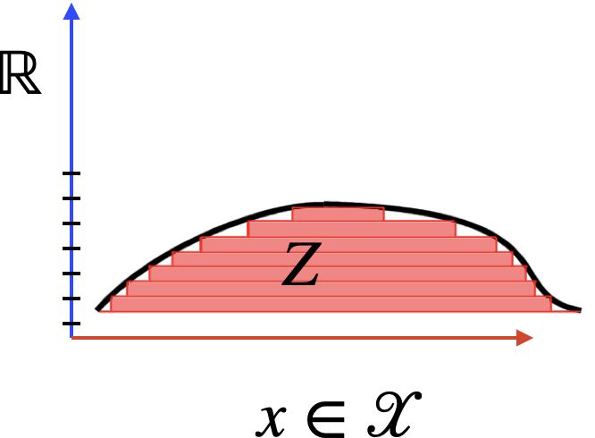
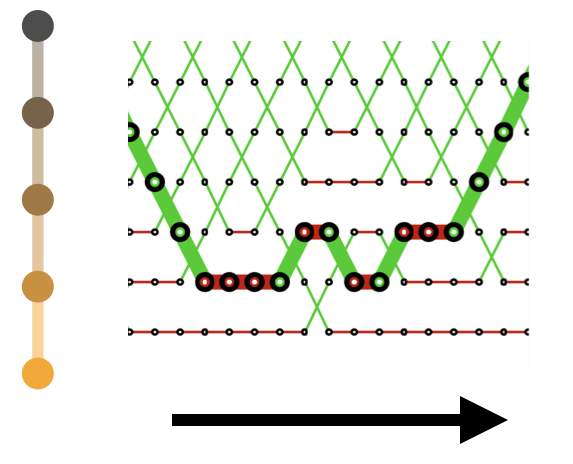
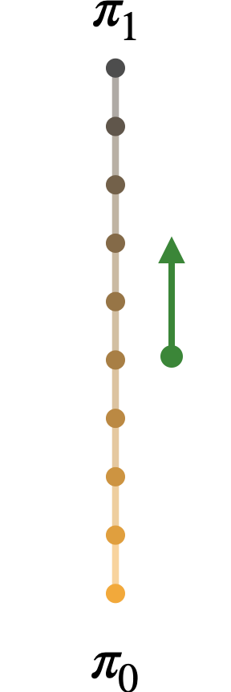
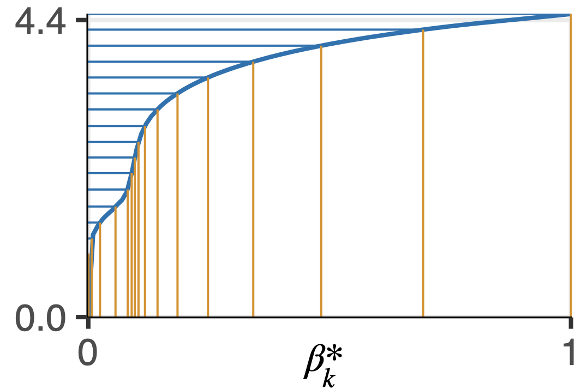
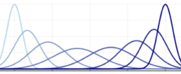
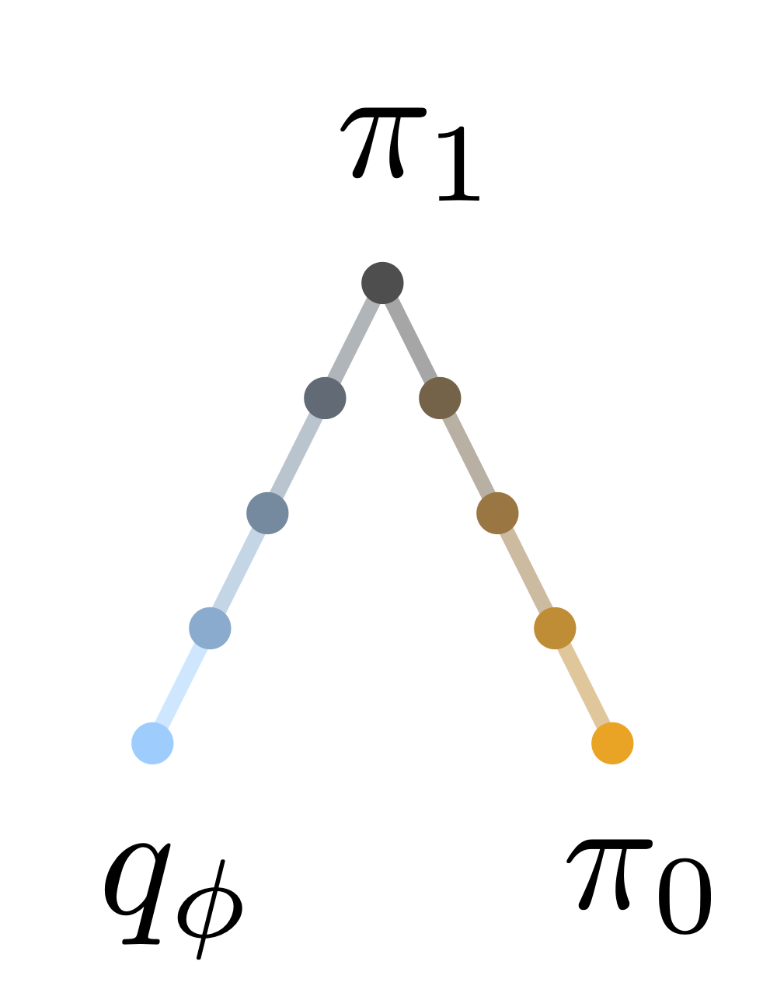

Computational Lebesgue Integration
Introduction
The Lebesgue integral, \(\int_{\mathcal{X}} f(x) \mu(\text{d}x)\) makes little structural assumptions on the integrand domain \(\mathcal{X}\). This high level of generality is useful for example when performing Bayesian inference over combinatorial spaces. As a specific use case, consider Bayesian phylogenetic inference, where \(\mathcal{X}\) is the space of phylogenetic trees.
Are there generic tools to approach the problem of computing Lebesgue integrals? By generic, we mean that they should apply to all situations where the Lebesgue integral is defined.
Surprisingly, the answer is yes. The generic setup is too abstract to permit concrete algorithms, but it does permit the elaboration and analysis of “meta-algorithms.”
The general story of these meta-algorithms starts in the same way as Lebesgue’s original idea: exploiting the fact that while the domain of \(f\) is unstructured, its image is \(\mathbb{R}\).

But in contrast to the theory of Lebesgue integration, which is a settled field, Computational Lebesgue Integration is in active development.
This page is a growing bibliography of Computational Lebesgue Integration methods. Create a pull request if you would like to add missing entries. To keep the length of this page manageable, we only include methods that (1) apply to any type of target distributions (e.g., we are not including methods that assume real-valued targets), (2) have reasonable scalability to large problems.
Fundamentals
Annealing
Many methods described here anneal the distribution of interest \(\pi(\text{d}x) \propto \exp(\ell(x)) \pi_0(\text{d}x)\), i.e., consider the path \(\pi_\beta(\text{d}x) \propto \exp(\beta \ell(x)) \pi_0(\text{d}x)\). Given the direct connection between \(\beta\) and the inverse temperature in statistical mechanics, the notion of annealing appears right from the very beginning of the Monte Carlo literature, in Equation (2) of Metropolis et al. (1953). It is used as a tool detached from its statistical mechanics interpretation as early as Pincus (1970).
Meta-algorithms

Two large families of meta-algorithms are able to take a basic, inefficient MCMC algorithm and transform it into a potentially much faster one while preserving consistency guarantees.
The first family is designed via MCMC on augmented distributions:
- Parallel tempering (PT): Charles J. Geyer (1991)
- Simulated tempering (ST): Charles J. Geyer and Thompson (1995)
The second family uses importance sampling on augmented distributions combined with resampling:
Normalization constants
To obtain estimates of normalization constant from the output of the above algorithms, several algorithms are available, for example:
- The stepping stone, a product of importance sampling estimators, see Bennett (1976) and Xie et al. (2011).
- Bridge sampling (Gelman and Meng 1998).
Non-reversible variants
The variable \(\beta\) is on \([0, 1]\), and hence facilitate the design of non-reversible algorithms even when \(\mathcal{X}\) is a black box state space.
- In parallel tempering:
- Non-reversible simulated tempering (NRST)

Methodological extensions
Adaptive schedules
In challenging problems, using an adaptive discretization of \(\beta \in [0, 1]\) is critical for good performance.

Generalized distribution paths
Most of the methods described so far also apply when the annealing distributions are generalized into a path of distributions. Paths that are geodesic can lead to substantial savings.

Variational blends
Instead of a fixed prior \(\pi_0\) as a tractable reference, a fitted variational distribution \(q_\phi\) can also be used, either by itself or in conjunction.

Convergence of adaptive methods
Theoretical frameworks to analyze the convergence of the above adaptive methods (schedule, end points, paths):
- For stochastic gradient methods, see, e.g., Andrieu and Thoms (2008) for the general toolbox and Miasojedow, Moulines, and Vihola (2013) for analysis in the case of PT specifically.
- For round based schemes, see Chimisov, Latuszynski, and Roberts (2018) for general tools, and Surjanovic et al. (2022) for analysis in the case of variational PT specifically.
Software
Software implementations of the above meta-algorithms (PT, ST, AIS, ASMC) that support arbitrary data types. We do not include packages specialized to real-valued targets, nor software that use algorithms that do not scale to large problems (e.g. universal PPLs that only provide algorithms such as non-Markovian SMC or lightweight Metropolis-Hastings).
- Turing.jl, a universal Probabilistic Programming Language (PPL) (Ge, Xu, and Ghahramani 2018) with some PT support.
- Blang, a PPL over arbitrary data types with NRPT, AIS and ASMC (Bouchard-Côté et al. 2022).
- NIMBLE, a PPL with PT support (Pleydell 2021).
- Pigeons, an NRPT implementation interfacing multiple PPLs (Turing, Stan, Blang), black box MCMC code (Surjanovic et al. 2023). Also supports distributed computation over MPI.